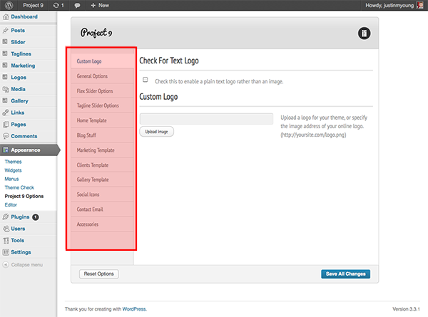
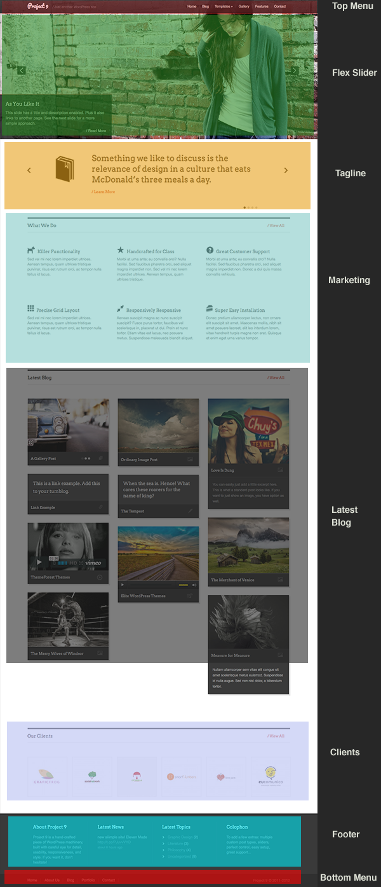
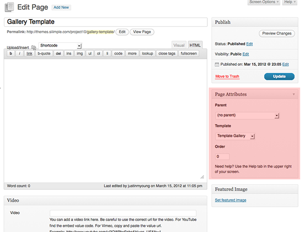
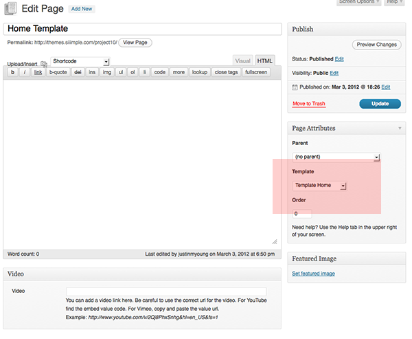
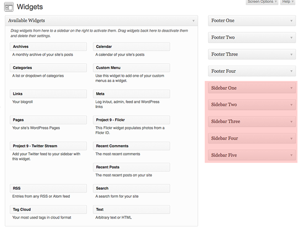
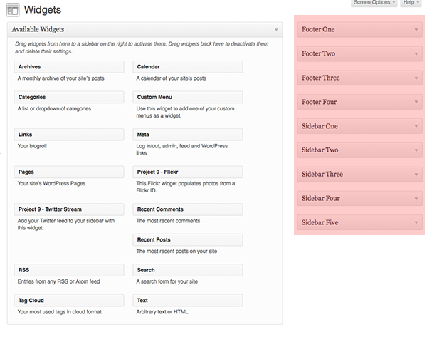
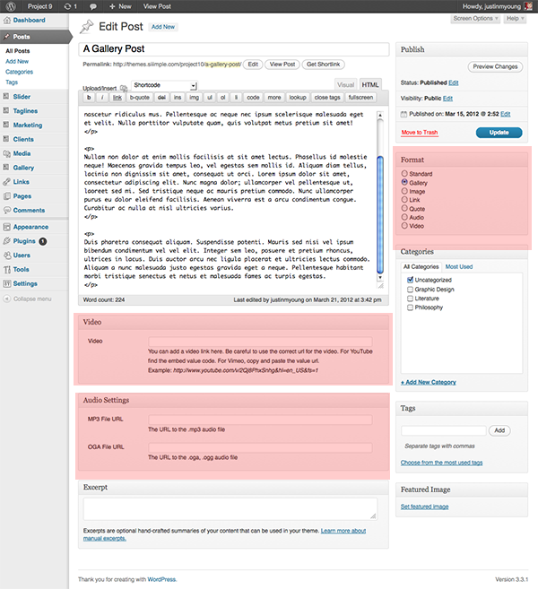

A Creative WordPress Theme
Visit us at Siiimple
Thank you for purchasing my theme. If you have any questions that are beyond the scope of this help file, please feel free to email via my user page contact form here.
A lot of careful work has gone into this theme creation and I'm very pleased you have decided to buy it! Thanks so much!
Table of Contents
A) WordPress Installation - top
Luckily, WordPress is pretty easy to install. It's quick, easy, and painless. You can read all about it here: Installing WordPress.
B) Installation - top
The first thing to do after completing the WordPress installation is navigate to the "themes" directory within your WordPress files, then placing the "Project 9" theme folder into the themes directory. Alternatively, you can upload the theme through the admin area by navigating to Appearance > Themes > Install Themes > Upload. Just upload the zip Project 9 theme file. *Make sure you upload the actual theme, not the original download folder that has the license, documentation, etc. within it. You will receive an error. Just upload the theme folder by itself :)
C) Options - top
Project 9 has a variety of options to help setup your super cool site easily and with as little hassle as possible.
It's important to familiarize yourself with these options, because they allow for greater, more specific customization of your site. Most all aspects of Project 9 Theme can be changed through this Options area. However, if you wish to change specific items that are not shown within the demonstration, it will not likely be possible to alter these items within the options area. For that help, please contact me for further support.
In the Project 9 Options area, you can control effects for both sliders, and customize the "Home Template", "Marketing Template", "Clients Template", and "Gallery Template". You create these templates just like you would create any new page, except you will choose the respective template in the Page Attributes Template option area, which is available on the right side of the new page. Have a look at the image below. It's best to think of the structure in sections. I've tried to make it easier :)
D) (Flex) Slider Setup - top
The main slider will work the same way a regular post works. Except you will be adding your slider items through the custom post type entitled "Slider". Adding a new slider is just like adding a new post with an image. Use the Featured Image uploader on the right side of the page, Use as Feature Image, then save.
Additionally, you can alter some of the functionality of the slider by going to Project 9 Options > Flex Slider Options. You can change the options there.
E) Templates (Homepage + Blog + Gallery) - top
Template Home
You will notice that the front page (main page), which is what the demo is demonstrating, is NOT the actual blog. What you see in the demo is the Template Home template. This template the "Flex" Slider, "Taglines (Slider)", Marketing, Clients, Footer.
You will create these templates by going to Pages > Add New. Then you will look for "Page Attributes" > "Template" > and here you will see a dropdown list of the different templates you can create with Project 9.
Once you create a page for each of these templates, you can add new posts to these respective templates by using the Custom Post Types on the side of the admin area, located below the "Posts" are on the left side. Please refer to the image below:
Blog
You probably want a blog as well? Please pay close attention to how to create a blog that is NOT used as the homepage. This is tricky for many, many newer users...so pay close attention.
- Create Blog Page: Go to Pages > Add New. Create a new page, and call it whatever you want. Do NOT choose a template in this section. Very important. Do NOT choose a template in this area.
- Go to Settings > Reading. Choose "static page". For the "Front page" choose your home template, whatever you named it, choose it. Then choose the blog page you just created under the "Posts page". Now you have created a static page with the front page showing the Home Template and you have a separate page that will hold all your blog posts.
 - All of the blog posts will be adding through the traditional "Posts" area. Add new posts, and your new posts will appear in this page.
- Not quite done yet. Go to Appearance > Project 9 Options > Blog Stuff. You can choose between two layouts. One layout has a sidebar. The other layout does not. In General Options, you can choose to show or not show the latest blog items on the home page. Same for Clients.
- Almost done.
- If you chose the one with the Sidebar, you can mess around with the sidebar by going to Appearance > Widgets. Check out the image below:
- All done with that. Whew!
Gallery & Clients
The good news is - the Gallery & Clients is done exactly the same way as the creating any new page. Again, go to Pages > Add New. Create a new page, and choose the Gallery Template or Clients Template in the "Page Attributes" > "Template". See image below:
F) Sidebars (Single Page + Blog + Footer) - top
You have three different areas where you can use Sidebars. On the Single Pages, in the Blog, and in the Footer. This is pretty simple, so don't fret. Go to Appearance > Widgets. When you get there, you can drag and drop. Pretty easy, hey?
G) Creating Menu Setup (Top & Footer) - top
You will notice there are two menus available in Project 9. The main menu at the top, and the menu located at the bottom in the footer. Creating both menus is the same, but a little different :)
- Go to Appearance > Menus
- Create New Menu
- Choose Theme Location (Top Left)
- Drag and Drop Menu Items into your menu area on the right.
- For dropdown menu to be activated, simply drag menu item beneath another menu item.
H) Post Formats - top
Post Formats are cool, and easy to use. When adding a new post, simply choose the post format you wish on the right side. See image.
For audio, choose audio in the post format area, and add audio link in the meta box below. For video, do the same.
I) CSS Structure - top
- 01. WORDPRESS CLASSES
- 02. COMMENTS
- 03. MARKETING
- 04. LOGO TEMPLATE
- 05. LATEST HOME BLOG
- 06. FOOTER
- 07. JPLAYER
- 08. GALLERY SLIDER
- 09. GALLERY SLIDER PAGINATION
- 10. SINGLE & PAGE
- 11. BLOG STUFF
- 12. GALLERY & FILTER
- 13. SHORTCODES
J)Script Sources - top
- custom.js
- easySlider.js
- easing.js
- flexslider.js
- isotope.js
- jplayer.js
- masonry.js
- slides.js
- superfish.js
- supersubs.js
K)Image Sizes - top
- Flex Slider (large image) - 1600px x 700px
- Tagline Slides - 125px x 125px
- Marketing - auto size (whatever size you use, goes in)
- Latest Blog - auto size (gallery takes 290px x 190px, but will resize)
- Clients - 140px x 140px
Once again, thank you so much for purchasing this theme. As I said at the beginning, I'd be glad to help you if you have any questions relating to this theme.
Justin Young